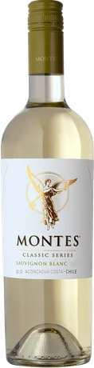
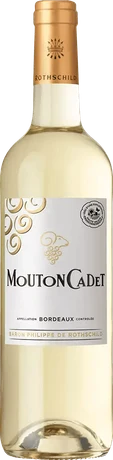
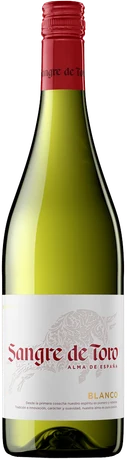
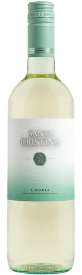
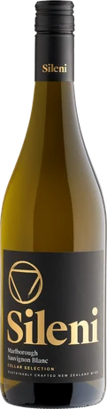
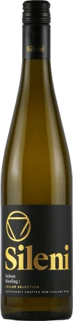
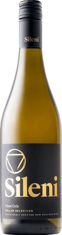
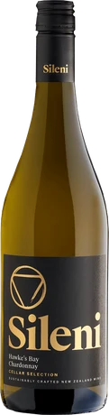
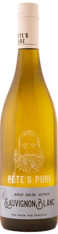
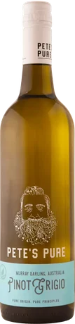

AFFORDABLE WINE / WHITE
3,000円以下の安ウマ白ワイン10選｜東京のワイン会で好みを見つける飲み比べ
公開：2026年10月21日 ／ GLASS VIBE編集
「白ワインは好き。でも、いつも同じ一本を選んでしまう」。そんな方に向けて、税込3,000円以下で選べる白ワインを10本まとめました。東京のワイン会で知った品種を復習したいときや、友人との交流会に持ち寄る一本を探すときの参考にしてください。爽やかなタイプから華やかな香りのタイプまで、選ぶ理由を添えて紹介します。
価格確認日：2026年10月21日。参考価格はエノテカ・オンラインの商品ページに掲載された750ml単品の税込価格です。送料は別途。市場全体の平均価格・最安値ではありません。価格・在庫・ヴィンテージは変わるため購入時に確認してください。
ワイン会で楽しむ、白ワインの選び方
品種を一つ決めて国を変えるか、同じ造り手で品種を変えると、比較の軸が明確になります。ソーヴィニヨン・ブランなら香りや酸の印象、ピノ・グリなら果実のふくらみ、シャルドネなら食事とのまとまり、と注目点を一つだけ決めるのがおすすめです。

ラベル・年号は販売品と異なる場合があります。
モンテス・クラシック・シリーズ・ソーヴィニヨン・ブラン
チリ／モンテス
ハーブ・柑橘の爽やかさ ／ 750ml
オーク樽を使わずに仕立てるソーヴィニヨン・ブラン。ライムやハーブを連想させる香りの方向性が、白ワイン選びの基準になります。会話をしながら軽い前菜をつまむ東京のワイン交流会にも、最初の白として提案しやすいタイプ。
料理の提案：ハーブを添えた魚介サラダ
ワイン会での楽しみ方：ニュージーランドや豪州の同品種と比べる。

ラベル・年号は販売品と異なる場合があります。
ムートン・カデ・ブラン
フランス／バロン・フィリップ・ド・ロスチャイルド
柑橘・バランス型 ／ 750ml
ボルドーの白を手頃な価格で知る入口。ソーヴィニヨン・ブラン主体で、柑橘系の風味と酸のバランスが紹介されています。知名度だけで決めず、同予算の新世界の白と並べてみると好みの輪郭が見えてきます。
料理の提案：白身魚のソテーとレモン
ワイン会での楽しみ方：産地を伏せて、好きな方を先に選ぶ。

ラベル・年号は販売品と異なる場合があります。
サングレ・デ・トロ・ブランコ
スペイン／トーレス
すっきり・食中向き ／ 750ml
柑橘を思わせる爽やかさが軸の定番白。1,000円台で選べるので、料理にも予算を残したい持ち寄りワイン会の候補です。凝った香りの説明をするより、「何と食べたいか」から楽しんでみましょう。
料理の提案：魚介のマリネとオリーブ
ワイン会での楽しみ方：食前と食中で飲み心地を比べる。

ラベル・年号は販売品と異なる場合があります。
サンタ・クリスティーナ・ビアンコ
イタリア／サンタ・クリスティーナ
フルーティー・親しみやすい ／ 750ml
イタリアの土着品種をブレンドした白。単一品種にこだわらず、飲み心地のよさを探す人に提案したい一本です。赤のサンタ・クリスティーナとセットで用意すれば、同じブランドを白・赤で楽しむテーマも作れます。
料理の提案：野菜のアンティパスト
ワイン会での楽しみ方：ブレンドのまとまりと果実の印象に注目。

ラベル・年号は販売品と異なる場合があります。
セラー・セレクション・ソーヴィニヨン・ブラン
ニュージーランド／シレーニ
柑橘・すっきり ／ 750ml
マールボロのソーヴィニヨン・ブラン。すっきりした飲み口を好む人が、価格を少し上げて試す候補です。ワイン会では同品種のチリや豪州を添えて、香りの方向の違いを無理なく話せます。
料理の提案：刺身や柑橘を添えた前菜
ワイン会での楽しみ方：冷たい一口と少し温度が上がった一口を比べる。

ラベル・年号は販売品と異なる場合があります。
セラー・セレクション・リースリング
ニュージーランド／シレーニ
華やかな香り ／ 750ml
品種らしい華やかさが紹介されるリースリング。ソーヴィニヨン・ブランやシャルドネだけでは単調になるときに、香りの幅を加える一本です。品種名から甘口・辛口を決めつけず、商品表示も確認して選びましょう。
料理の提案：柑橘を使った鶏肉の前菜
ワイン会での楽しみ方：まず香りだけを比べてから味を確かめる。

ラベル・年号は販売品と異なる場合があります。
セラー・セレクション・ピノ・グリ
ニュージーランド／シレーニ
アプリコットを思わせる香り ／ 750ml
ピノ・グリならではの華やかな果実の香りが紹介される一本。いつも同じ品種を選んでしまう人に、新しい選択肢を増やしてくれます。味を正解・不正解で語らず、それぞれが思い浮かべた果物を共有してみてください。
料理の提案：ローストチキンや白身肉
ワイン会での楽しみ方：豪州のピノ・グリージョと並べる。

ラベル・年号は販売品と異なる場合があります。
セラー・セレクション・シャルドネ
ニュージーランド／シレーニ
爽やかな果実味 ／ 750ml
親しみやすさとフレッシュな果実感を軸にしたシャルドネ。シャルドネはすべて樽の香りが強い、というイメージを持つ人にも比較候補になります。生産地や造りによる幅を、手頃な価格で体験するための一本です。
料理の提案：魚のグリルやシンプルな鶏料理
ワイン会での楽しみ方：香りの強さより食事とのまとまりを比べる。

ラベル・年号は販売品と異なる場合があります。
ピーツ・ピュア ソーヴィニヨン・ブラン
オーストラリア／ピーツ・ピュア
トロピカル・丸みのある酸 ／ 750ml
ソーヴィニヨン・ブラン主体の白。トロピカルフルーツのアロマと丸みのある酸が紹介され、1,000円台で果実感を楽しみたいときの候補です。同品種でも国によって印象が違うことを知る、気軽な飲み比べに。
料理の提案：エビや鶏肉のサラダ
ワイン会での楽しみ方：チリ版と価格を隠して飲み比べる。

ラベル・年号は販売品と異なる場合があります。
ピーツ・ピュア ピノ・グリージョ
オーストラリア／ピーツ・ピュア
ドライ・透明感 ／ 750ml
ピノ・グリージョを中心に複数品種で仕立てるドライな白。1,430円という確認価格は、人数分の食事も準備したいワイン会で組み合わせやすい水準です。軽やかな方向を求める人の候補に。
料理の提案：カプレーゼや野菜のグリル
ワイン会での楽しみ方：同ブランドのソーヴィニヨン・ブランと比較。
まずは3本で、小さな飲み比べを
最初の飲み比べには、モンテスのソーヴィニヨン・ブラン、シレーニの同品種、ピーツ・ピュアの同品種を。確認価格の合計は5,830円です。チリ・ニュージーランド・オーストラリアを同じ品種で比べるので、初めてのワイン交流会でも話題が生まれます。ボトル名を伏せて好みを先に選ぶ方法も楽しめます。
白ワインは冷たいほどおいしいですか？
必ずしもそうではありません。冷やしすぎると香りを拾いにくいこともあります。グラスの中で少しずつ温度が変わる過程を楽しみ、最初と数分後の印象を比べてみてください。
味わいの特徴は各販売元の商品説明を参考に編集したもので、全商品の実飲レビューではありません。料理と飲み比べの組み合わせは編集部の提案です。商品写真の出典は各銘柄に記載しています。
東京で、ワインと会話を楽しみたい方へ
GLASS VIBEは、東京・湯島を拠点に準備しているワイン交流会です。一人でも、ワインに詳しくなくても、自分のペースで。記事で紹介した銘柄がイベントで提供されるとは限りません。